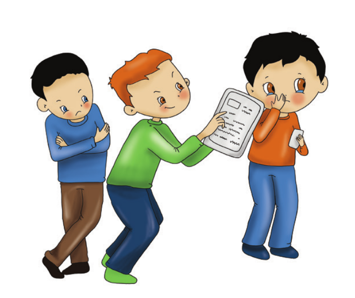
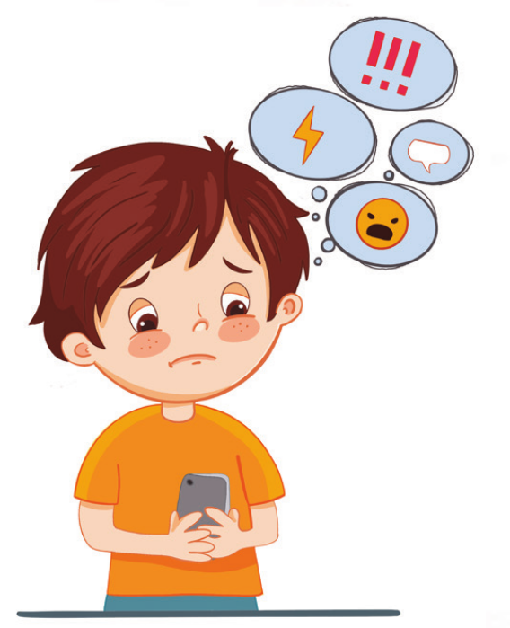

SİBER ZORBALIK NEDİR?
Günümüzde bireylerin bilgiye hızlı bir şekilde ulaşmasını ve insanların iletişimini kolaylaştıran bilgi ve iletişim teknolojileri (internet, cep telefonu, bilgisayar vb.) bireyler tarafından yaygın olarak kullanılmaktadır. Özellikle akıllı telefonların yaygınlaşmasıyla birlikte bireyler internete artık kısa zamanda ve istenilen mekanda ulaşabilmektedirler. Bu bilgi ve iletişim teknolojileri bireylere sağlanmış olduğu bunca kolaylığın yanında amacının dışında kullanılmaya başlanmasıyla bazı olumsuz sonuçların yaşanmasına da neden olmaya başlamıştır. Yaşanan bu olumsuzluklardan bir tanesi de iletişim teknolojilerinin birbirlerine zarar vermek amacıyla kullanılmasıyla ortaya çıkan siber zorbalıktır.

Siber zorbalık; bir birey veya grubun bilgi ve iletişim teknolojilerini diğer bireylere zarar vermek amacıyla kullanması olarak tanımlanmaktadır.
Bilgi ve iletişim araçlarıyla (telefon, tablet, bilgisayar, internet vs.) bir kişi ya da grubun kendisine hedef olarak seçtiği bir kişi ya da gruba yönelik yaptığı zarar verici her türlü eyleme siber zorbalık denir.
Hangi Davranışlar Siber Zorbalıktır?
- Kişinin görüntülerini çekmek ya da çekilmiş görüntülerin kişiden izin almadan sanal ortamlarda yayınlamak.
- Sanal ortamda olumsuz sözler sarf etmek
- Sanal ortamda başkasının yerine geçerek o kişiymiş gibi davranmak
- Sanal ortamda birilerini tehdit etmek
- Sosyal medyada birilerine hakaret etmek, aşağılamak, dalga geçmek
- Birisine ait özel bilgileri onun izni olmadan sanal ortamda paylaşmak
- Bir kişiyle ilişkin onu karalayıcı, küçük düşürücü site, sayfa ya da grup oluşturmak
- E-posta, mesaj ya da anlık iletilerle kişiye hakaret etme, aşağılama, alay alma ya da tehdit etme
- Sosyal ağlarda birisi hakkında dedikodu çıkartma
- Arkadaşlarıyla organize olup mağdur olarak seçtiği kişiyi sosyal platformlarda dışlama (arkadaşlıktan çıkarma, takibi bırakma vb.)

Siber Zorbalığın Nedenleri
- Eğlence / şaka amaçlı yaptığını düşünmesi
- Kendisine kötü davranan kişilerden sanal dünyada intikam almaya çalışma
- Başkalarını kontrol etme arzusu
- Arkadaşları arasında saygınlık kazanma
- Saldırganlıktan zevk alma
- Sert görünme isteği
- Yakalanma ihtimalinin düşük olması
- Mağdurla yüz yüze iletişim kurma zorunluluğunun bulunmaması
- Anonim olabilmesi (kimliğini gizleyebilme)
- Davranışlarının sorumluluğunu almaktan kaçma
- Kıskançlık
- Gerçek yaşamda davranışa dökemediği saldırgan düşüncelerini sanal ortamda gerçekleştirme isteği
- Gerçek hayattaki kızgınlığın sanal ortamda başka birisine yöneltilmesi
- Sanal ortamın yeterince denetlenmemesi
- Mağdurlara fiziksel zarar vermediklerini düşünmeleri
Siber Zorbalığın Sonuçları
- Siber zorbalığın; psikolojik, duygusal ve sosyal alanlarda ciddi olumsuz etkileri vardır.
- Zorbaca davranışlara maruz kalma durumu, zamanla fiziksel ve ruhsal rahatsızlıklara neden olmaktadır.
- Zorbaca davranışların uzun süre devam etmesi ve mağdurun çevresinden destek görememesi durumunda, yaşanan bu rahatsızlıklar daha da şiddetli hissedilmektedir.
- Zorba ve mağdurlarda; depresyon, yalnızlık, düşük sosyalleşme, düşük özsaygı, üzüntü, kızgınlık, korku ve anksiyete gibi psikolojik etkiler görülür.
- Siber zorbalığa maruz kalanlarda; kusma, kol ve bacak ağrısı, nefes darlığı, karın ağrısı, sırt ağrısı, çarpıntı ve bulantı gibi fiziksel tepkiler görülebilmektedir.
- Siber zorbalığa maruz kalanlar, dikkati bir noktada toplamada güçlük çekmekte ve yaşıtlarıyla uyum sağlamada problemler yaşamaktadır.
- Hem zorba hem de mağdurlarda okul başarısında azalma ve devamsızlıkta artış görülebilmektedir.
- Siber zorbalığa maruz kalanlar, aileleri ve sosyal çevreleriyle sıklıkla çatışma yaşamaktadır.